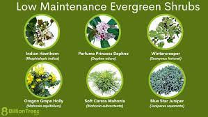
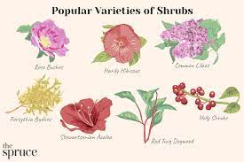
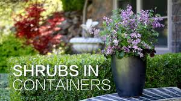

Low-Maintenance Evergreens
Low maintenance evergreen shrubs are the backbone of garden design. These hardworking plants provide year round structure to the landscape.
Popular Varieties
It can be overwhelming when deciding what flowers and shrubs to grow in your garden or yard, so you may choose plants based on their visual attractiveness.
Container Shrubs
Whether you are looking for evergreen, fragrant or compact shrubs, there are plenty that will thrive in a pot. Here are some suggestions to make your life easier...